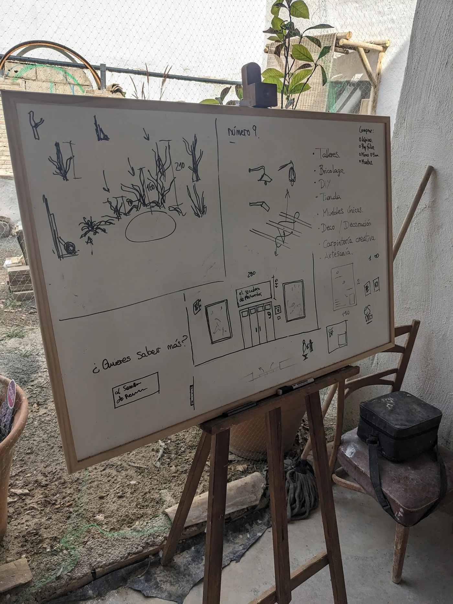
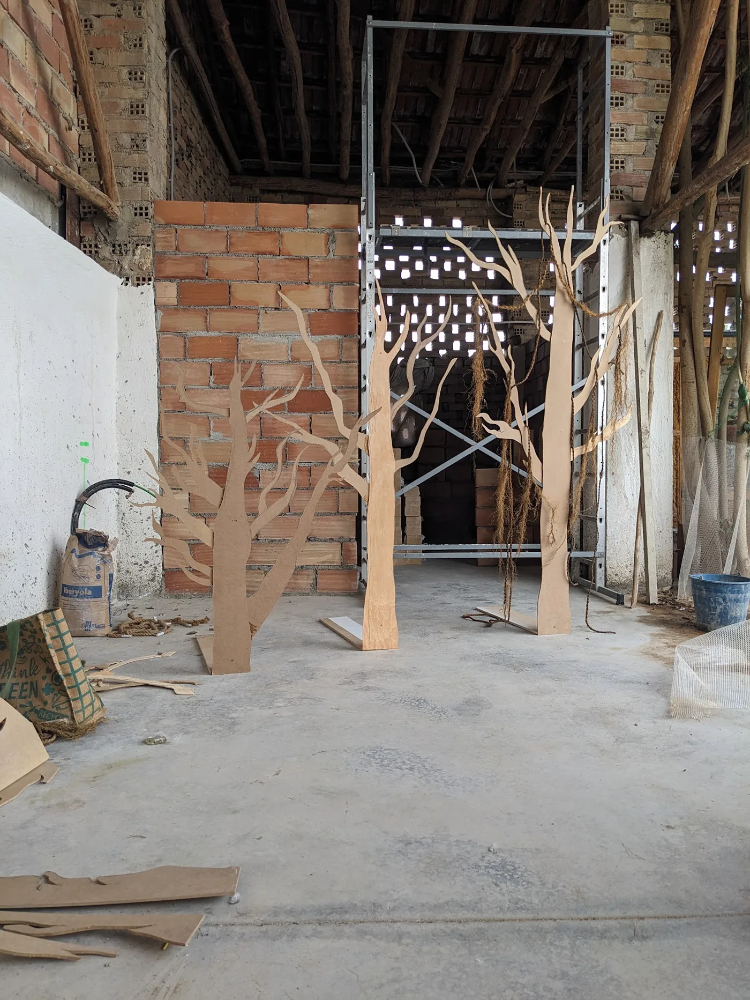
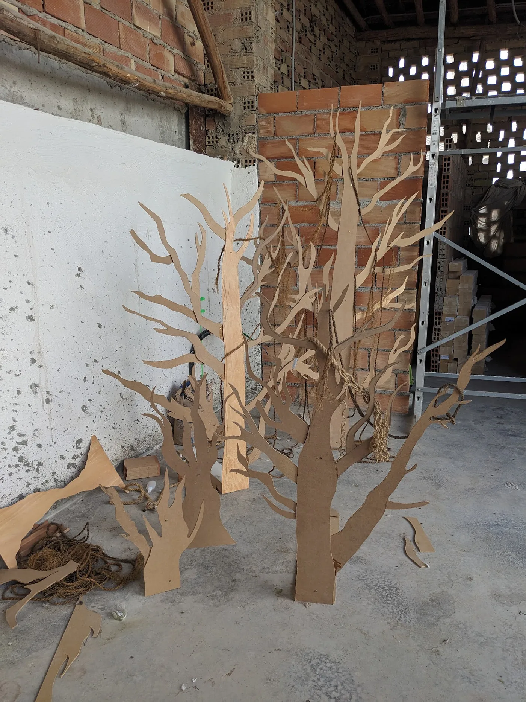
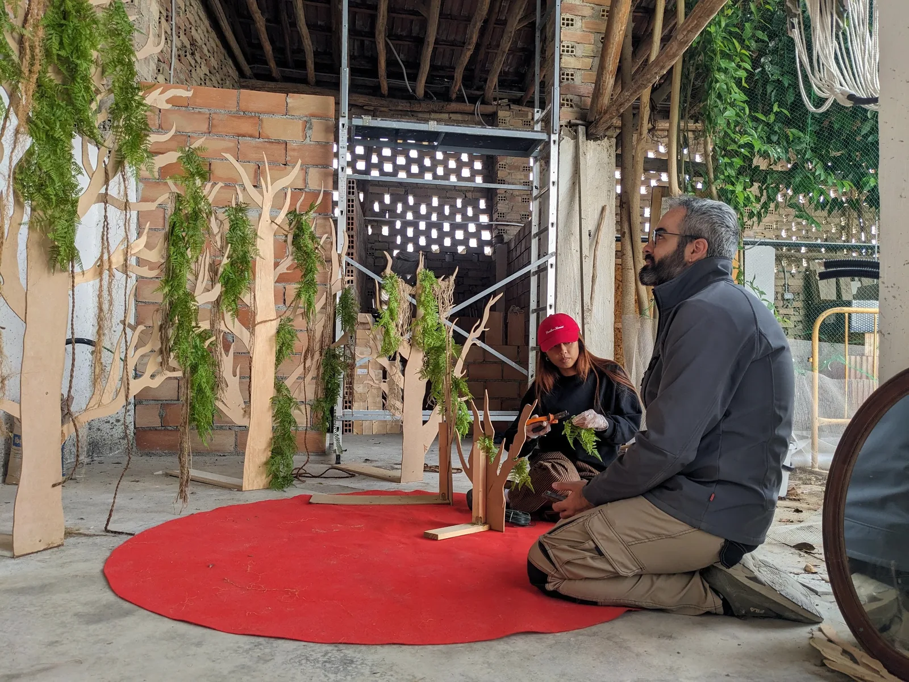
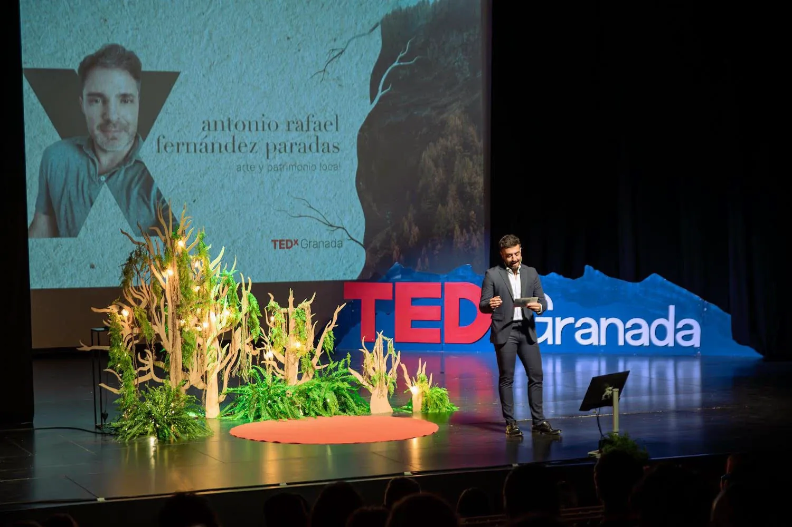

TEDxGranada Stage
A temporary event environment grown from the theme of Roots.
Delivered
The brief
Translate the event theme, Roots, into a stage environment.
My contribution
Co-design, fabrication, wiring, installation and stage management with El Secadero de Reviverdes.
The result
An illuminated timber and foliage setting for the live TEDxGranada event.
For TEDxGranada, I worked with the team at El Secadero de Reviverdes to co-design and fabricate a stage environment inspired by the event theme, Roots. The proposal translated that theme into a family of timber tree structures, foliage and illuminated natural forms that framed the speakers without competing with them.
The project moved from initial sketches and spatial composition through cutting, assembly, wiring and on-site installation. Warm light was integrated into the sculptural elements, giving the stage depth and atmosphere on camera while connecting the event to ideas of growth, networks and shared origins.
- Location
- Granada, ES
- Year
- 2025
- Status
- Built event environment
- Type
- Stage Design · Scenography · Fabrication
- With
- El Secadero de Reviverdes





I handled construction, wiring and installation, then worked as one of the stage managers during the event. Moving between design and live operation made it possible to understand the environment from both sides: as a visual frame for an audience and camera, and as a working setting that speakers and event staff needed to navigate confidently.
Have a place, programme or experience to improve?
Explore design consultancy